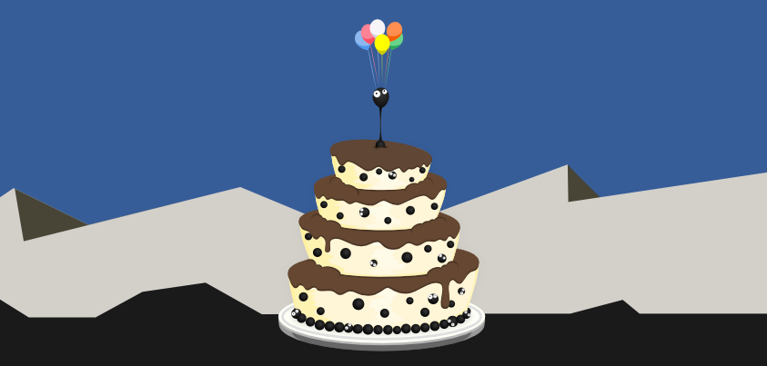

Started like a simple personal project, OpenGOO is a free and opensource clone of WorldOfGoo game, written in qt and libBox2d as physics engine.
Now it has a little team that believes in its future.
Celebrating the first year of the project we are defining the future of OpenGOO.
Many things are changed, and we intend to rewrite the entire code of the game to make OpenGOO compatible with
the opensouce tools of WorldOfGoo's community!
Afterwards we'll release the first alpha version.
We need active contributors!
Any kind of help is really appreciate, whether you are a programmer, sketcher, musician, writer or an artist in general.
In the latest months the game entered the Liberated Pixel Cup, an art and code competition.